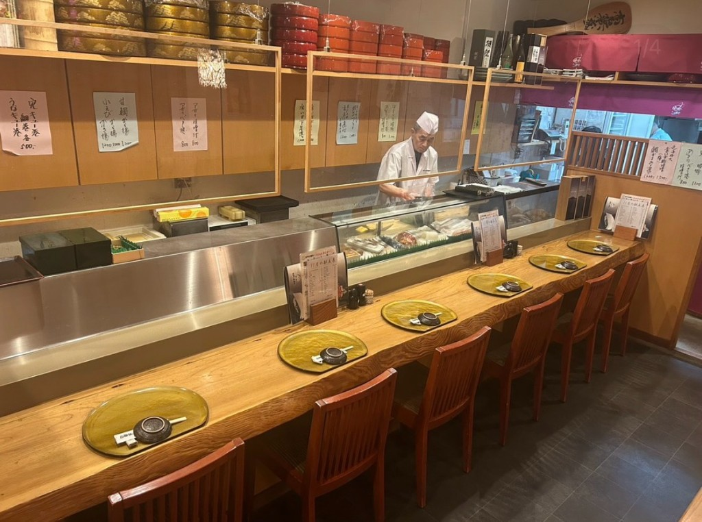
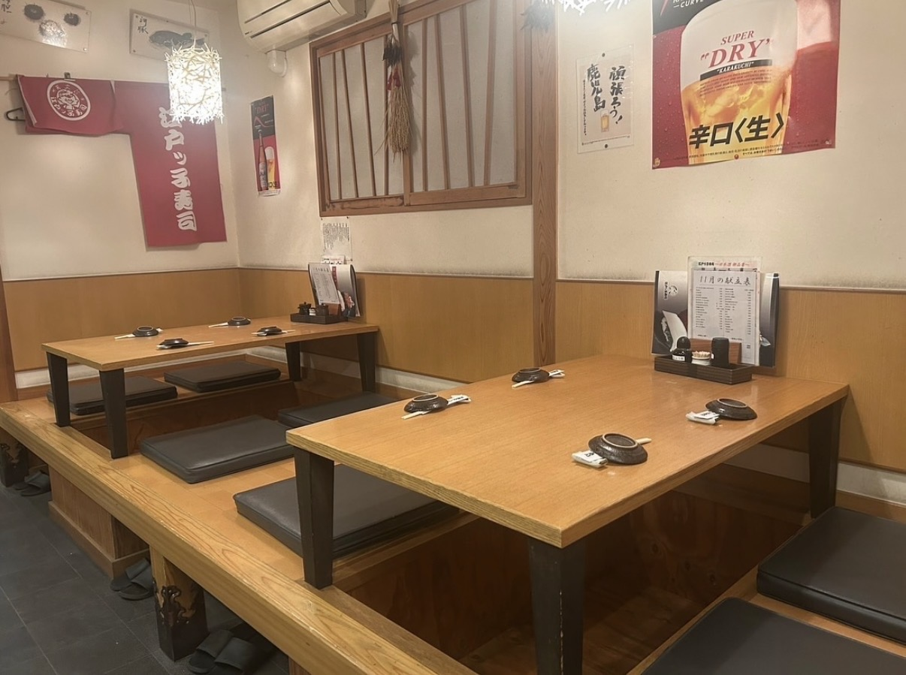
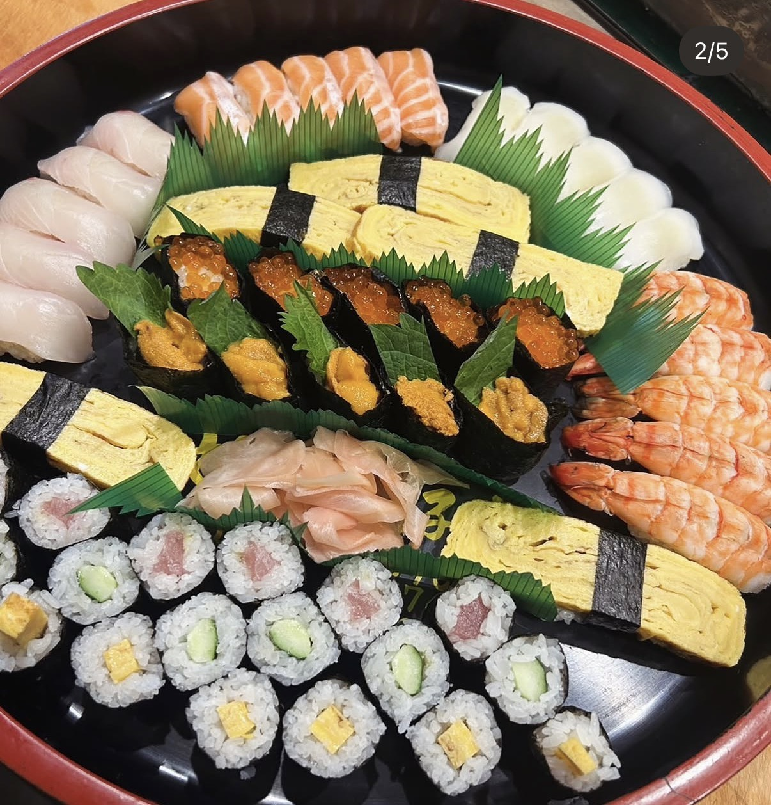
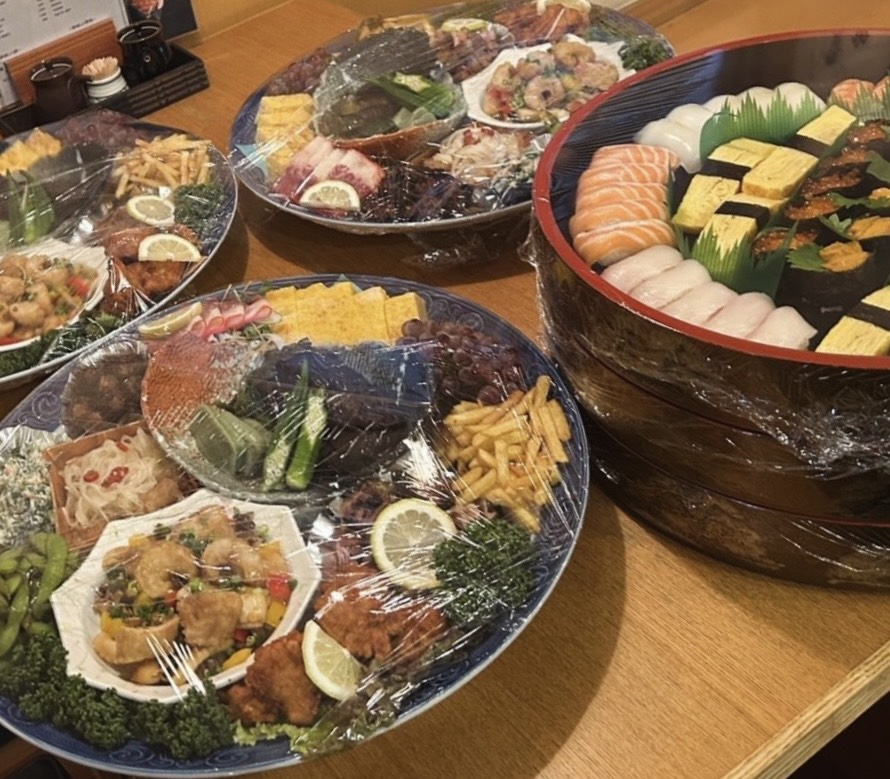
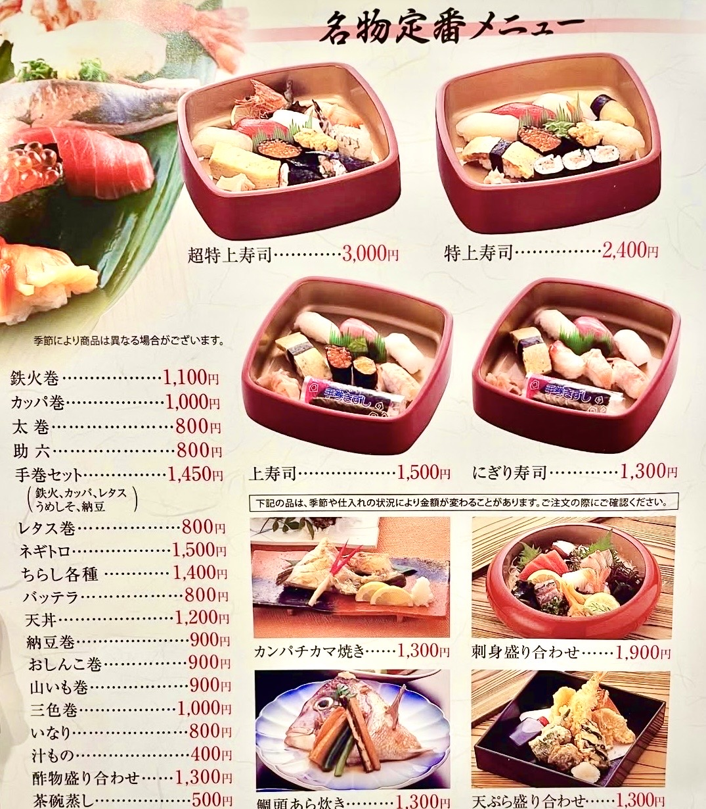
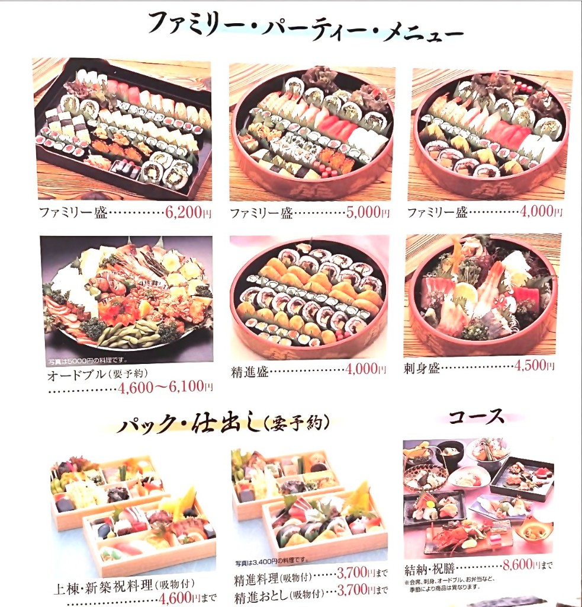
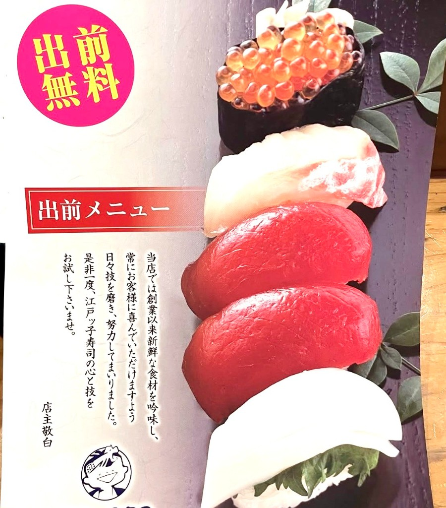

加治屋 本店
店内の落ち着いた雰囲気で、熟練の職人が握る寿司を。会食やご家族の団らんに。配達については事前にご相談ください。
Introduction
Gallery







※写真は店舗提供・掲載用の一例です。メニュー・価格は店頭・お電話でご確認ください。
Access
〒892-0842 鹿児島市加治屋町8-6
〒892-0841 鹿児島市山之口町12-21
文化通り店の様子や商品は、公式Instagramでもご紹介しています（アカウントはヒアリング内容に基づく仮の表記です）。投稿グリッドは、別途ホストする Next.js の /api/instagram/feed のURLを data-feed-url に設定すると表示されます。